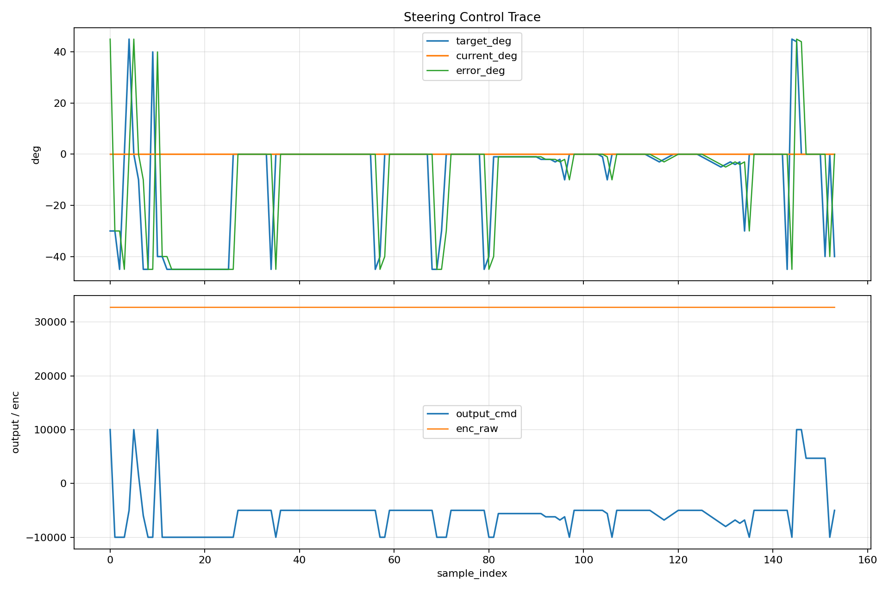
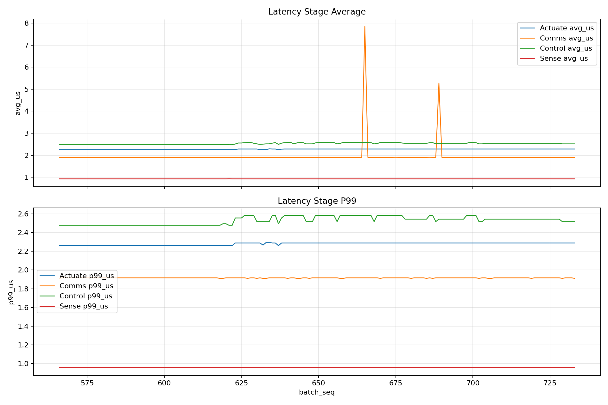

STM32F429ZI, LS ELECTRIC XDL-L7SA004BAA, XML-FBL04AMK1을 기반으로 한 조향 서브컨트롤러 프로젝트다. 1 ms 제어 루프, command lifecycle, pulse/direction 출력, safety 분리, runtime trace 체계를 실제 bench bring-up까지 연결해 “동작하는 임베디드 제어 시스템을 어떻게 설계하고 좁혀 가는지”를 보여주는 작업으로 정리했다.
이 페이지는 “완성품”보다 “실제로 어떤 구조를 만들었고, 무엇이 이미 검증됐으며, 남은 문제를 어떻게 좁혀 가고 있는지”를 보여주기 위한 포트폴리오다.
소프트웨어 구조는 최근 리팩터링을 통해 부트, runtime orchestration, control, diagnostics, safety를 분리했다. 하드웨어 흐름도는 아래처럼 command path와 feedback path를 구분해 읽는 것이 핵심이다.
`main.c`를 얇은 부트 진입점으로 만들고 `app_runtime.c`로 startup, keyboard bench, watchdog, periodic trace, fast tick service를 옮겼다.
`position_control.c`, `position_control_diag.c`, `position_control_safety.c`로 책임을 나눠 제어 수학, 진단, safety evaluator를 분리했다.
Pulse output, drive recognition, encoder path A/B testing을 실제 bench 데이터와 함께 추적했다.
아래 자료는 단순한 장식이 아니라, 현재 프로젝트 상태를 판단하는 실제 근거다. 첫 번째 그림은 control trace, 두 번째 그림은 latency trace다.

target command는 변하지만 current trace는 0 deg 부근에 머물고, output command는 계속 움직인다. 즉 drive-side actuation path는 살아 있지만 sensor truth closure가 아직 닫히지 않았다는 점을 시각적으로 보여준다.

1 ms loop 안에서 stage별 runtime cost를 지속 측정하고 있으며, Sense / Control / Actuate / Comms가 모두 single-digit microsecond 수준에서 관측되고 있다.
최근 `putty.log` 배치에서 p99도 대부분 3 us 이하로 유지되고 있다. 이는 제어 알고리즘 그 자체보다 현재 병목이 하드웨어 feedback interface 쪽이라는 판단을 뒷받침한다.
이 세 가지는 drive pulse recognition과 drive internal encoder truth가 이미 성립했다는 뜻이다. 따라서 현재 문제는 drive 이전이 아니라 drive 외부 재출력 이후 구간에 있다고 좁힐 수 있었다.
포트폴리오에서 중요한 것은 “잘 됐다”만 보여주는 것이 아니라, 문제를 어떻게 정의하고 증거로 좁혔는지를 보여주는 것이다.
CSV,9151,1,4.000,0.000,4.000,3217,1,0,32768,3217,3218,1,0,6,1,0 CSV,9251,1,4.000,0.000,4.000,3242,1,0,32768,3242,3243,1,0,6,1,0 CSV,9351,1,4.000,0.000,4.000,3267,1,0,32768,3267,3268,1,0,6,1,0
`output`, `req_hz`, `applied_hz`, `out_active`는 살아 있는데 `enc_cnt=0`, `enc_raw=32768`이 고정된다. 이 로그는 “제어기가 멈춘 것”이 아니라 “명령은 나가지만 외부 feedback truth가 닫히지 않는다”는 뜻이다.
CSV,395999,99,9.000,-851883.500,851892.438,0,1,-1419806177,2875193880,0,0,0,0,9,5,6 CSV,396099,99,9.000,-852818.438,852827.500,0,1,-1421364446,2873635616,0,0,0,0,9,5,6 CSV,396199,99,9.000,-853748.688,853757.750,0,1,-1422914758,2872085295,0,0,0,0,9,5,6
오실로스코프 연결 시 외부 encoder chain이 폭주하면서 command state가 `FAULTED`로 넘어간 사례다. 이건 단순한 timer 설정 문제가 아니라, level shifter / jumper / GND reference를 포함한 feedback interface 불안정 문제라는 점을 강하게 보여준다.
아래 평가는 현재 소스를 기준으로 한 현업식 코드 audit이다. 중요한 포인트는 “bench에서 이해되는 선택”과 “제품 설명용으로 바로 지적받을 선택”을 분리해서 보는 것이다.
현재 [`AppRuntime_Init()`]는 encoder start 직후 `Relay_ServoOn()`, `EncoderReader_Reset()`, `PositionControl_SetTargetWithSource(0)`, `PositionControl_Enable()`를 연속 호출한다. 그리고 [`PositionControl_Enable()`]는 내부에서 `Relay_EmergencyRelease()`까지 수행한다.
현재 속도는 드라이브 capability보다 소프트웨어 제한이 먼저 막고 있다. 실제 병목은 세 겹이다.
`0.003 motor_deg/pulse`와 `12.5:1` 기어비 기준, 지금 controller ceiling 10 kpps는 약 2.4 deg/s steering다. 즉 45 deg step 기준 이론적으로 약 18.75초가 걸린다.
현재 IWDG는 `Prescaler=256`, `Reload=4095`이며, 32 kHz LSI 가정 시 timeout은 약 32.8초다. 코드에서 refresh는 super-loop 마지막에서 매번 호출된다.
| 목표 응답 | 필요 steering speed | 필요 pulse rate | 평가 |
|---|---|---|---|
| 45 deg in 2 s | 22.5 deg/s | 약 93.8 kpps | 현재 10 kpps controller ceiling으로는 불가, 100 kpps pulse clamp 근처 |
| 45 deg in 1 s | 45 deg/s | 약 187.5 kpps | 현재 pulse clamp 100 kpps를 넘으므로 clamp와 TIM1 설정 재검토 필요 |
| 현재 코드 ceiling | 약 2.4 deg/s | 10 kpps | bench-safe 하지만 vehicle/actuator explanation 용으로는 매우 보수적 |
내 평가로는 지금은 sensor truth가 닫히기 전이라 10 kpps가 안전한 bench ceiling으로는 적절하다. 다만 feedback이 안정화되면 1차 목표는 30~50 kpps, 제품형 요구가 45 deg를 1~2초 안에 수행하는 수준이라면 최종 목표는 100 kpps 이상으로 requirement-driven tuning을 해야 한다.
| 계층 | 권장 범위 | 역할 |
|---|---|---|
| Command freshness | 50~100 ms | 통신 정지 시 `SAFE` 전이 |
| Loop/task watchdog | 10~50 ms | 1 ms fast tick 정지 시 motor output inhibit |
| Hardware IWDG | 100~300 ms | software fail 이후 최종 reset |
즉 ideal flow는 먼저 SAFE 전이, 그 다음 필요 시 IWDG reset이다. 현재처럼 32.8초 후 단순 reboot은 steering safety 설명으로는 부족하다.
현업에서 “이 모듈을 네가 소유한다”는 말은, 아래 질문 여섯 개를 혼자 설명하고 방어할 수 있다는 뜻에 가깝다. 이 표는 현재 코드 기준으로 내가 어디까지 답할 수 있고, 어디가 아직 gap인지 정리한 것이다.
| 질문 | 현재 코드 기준 답변 | 남은 gap | 현재 evidence |
|---|---|---|---|
| 입력과 출력 계약이 무엇인가 | 입력은 `target_angle`, encoder angle, `dt`, safety evaluator 결과다. 출력은 signed pulse frequency와 emergency/relay action이다. | startup profile과 runtime contract가 별도 문서/타입으로 완전히 고정되진 않았다. | CSV header, `PulseControl_GetStatus()`, `CommandLifecycle_t` |
| 상태가 왜 READY/ACTIVE/SAFE/FAULT로 나뉘는가 | 현재는 그렇게 구현돼 있지 않고 `CTRL_MODE_IDLE/POSITION/EMERGENCY`와 command lifecycle이 나뉘어 있다. | top-level supervisor state machine이 아직 없다. | 현재는 `CTRL_MODE_EMERGENCY`와 `CMD_FAULTED` 로그만 존재 |
| 각 fault가 몇 ms 누적되면 상태가 바뀌는가 | `REACHED`만 `0.5 deg` 범위 100 ms 유지가 있고, safety limit trip은 대부분 즉시다. command timeout은 현재 `0 ms`로 사실상 꺼져 있다. | sensor invalid 50 ms, overcurrent 20 ms 같은 persistence window가 없다. | `STABLE_TIME_MS = 100`, timeout disabled, safety trip immediate |
| SAFE와 FAULT의 차이가 무엇인가 | 현재 코드는 둘을 분리하지 못하고, 대부분 `EMERGENCY` 또는 `FAULTED` 결과로 수렴한다. | 보호정지와 고장정지의 정책 차이를 state와 recovery policy로 분리해야 한다. | 현재는 `CMD_RESULT_TIMEOUT`, `CMD_RESULT_ESTOP`, `CMD_RESULT_FAULT_*`만 존재 |
| fault가 자동 복구인지 수동 reset인지 | 현재는 latched fault가 없어서 재-enable이 비교적 쉽게 가능하다. | manual reset + all inputs healthy 조건을 강제하는 fault latch가 필요하다. | `PositionControl_Enable()`가 `Relay_EmergencyRelease()`를 직접 호출 |
| 이걸 어떤 테스트로 증명했는가 | latency batch, bench CSV, drive monitor(`St-06`, `St-16`, `St-03`), runaway fault log가 있다. | formal fault injection matrix와 SAFE/FAULT recovery test는 아직 없다. | putty log, control trace, latency trace, command lifecycle logs |
아래 표는 현재 코드 그대로가 아니라, 지금 프로젝트를 제품형 steering controller로 끌고 가기 위한 목표 운영 모델이다. 이 구분에서 핵심은 SAFE는 보호정지, FAULT는 고장정지라는 점이다.
| 현재 상태 | 조건 | 다음 상태 | 출력 정책 |
|---|---|---|---|
| INIT | homing 완료, `angle_valid=1`, `estop=0`, `servo_ready=1` | READY | `motor_enable=0` |
| READY | `cmd_alive=1`, `watchdog_ok=1`, `servo_alarm=0` | ACTIVE | `motor_enable=1` |
| ACTIVE | `cmd_rx_age_ms > 100` | SAFE | `torque_limit=0`, `motor_enable=0`, `emg_assert=1` |
| ACTIVE | `angle_valid=0`가 50 ms 지속 | FAULT | `motor_enable=0`, `emg_assert=1`, latched fault |
| ACTIVE | overcurrent가 20 ms 지속 | FAULT 또는 SAFE | 즉시 torque limit 후 정지 |
| ANY | `estop_hw=1` | SAFE | 즉시 정지 |
| ANY | `servo_alarm=1` | FAULT | latched fault |
| SAFE / FAULT | 수동 reset + 모든 입력 정상 | READY | 재시작 허용 |
이 상태 머신은 방향성으로는 매우 적절하다. 다만 현재 코드에는 `READY/SAFE/FAULT` top-level state가 없고, `angle_valid`, `servo_ready`, `servo_alarm`, `overcurrent`, `cmd_rx_age_ms` 같은 신호도 일부는 아직 직접 모델링되지 않았다. 따라서 이 표는 “현재 구현 설명”이 아니라 “다음 단계 설계 명세”로 넣는 것이 정확하다.
브레드보드 기반 encoder interface를 안정화하고, AO/BO -> level shifter -> TIM2 체인을 확정한다. 프로브 연결 시 runaway가 발생하지 않는 기준 상태를 먼저 만든다.
현재의 bench auto-enable 경로를 정식 startup contract로 바꾸고, emergency / limit / timeout / sensor plausibility에 대한 latched fault policy를 단일 owner에서 관리한다.
blocking UART 대신 async logging path를 도입하고, fault history, runtime statistics, command trace를 제품형 진단 구조로 정리한다.
validated sensor truth, homing, startup sequencing, communication fail-safe까지 포함한 steering sub-controller를 완성해 상위 자율주행 스택과 안정적으로 연동한다.